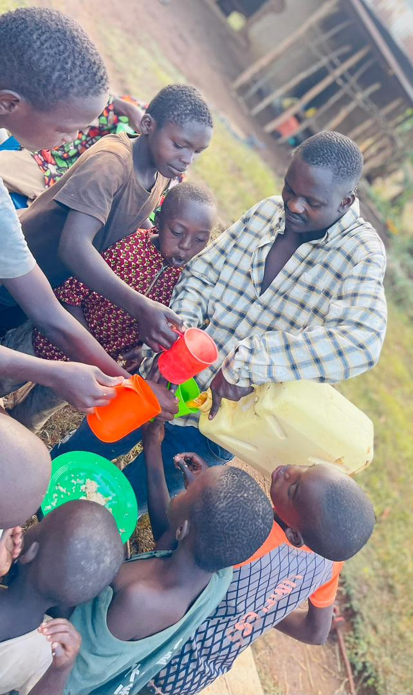
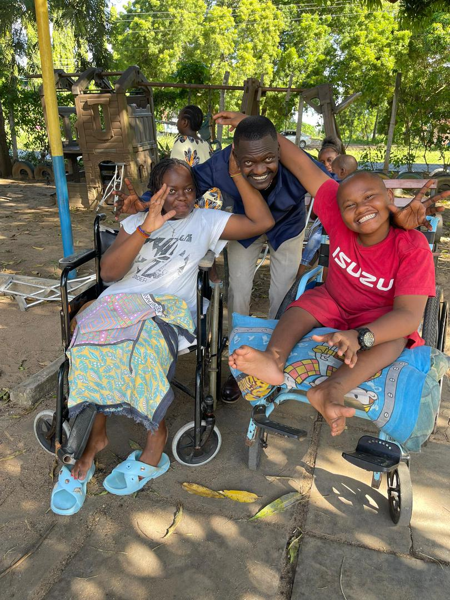

Child protection first
Every action starts with safeguarding children from danger and giving them a reliable support system.
We are a charity devoted to child rescue, care, and protection. Our work is compassionate, organized, and rooted in the belief that every child deserves safety and a hopeful future.

Newlife Child Rescue Buwagani was created to respond to the needs of children facing neglect, hardship, and instability. Rescue is only the first step. Real change happens when children receive love, care, education, and a stable environment.
Our approach combines immediate relief with child protection, family support, and the kind of daily consistency that helps a child feel safe again.
Every action starts with safeguarding children from danger and giving them a reliable support system.

Volunteers, local leaders, churches, and donors help expand the reach and strength of the mission.

Support goes beyond rescue by including daily care, follow-up, learning support, and family connection.
Donations are used for food support, education, shelter, transport, rescue follow-up, and child care. Progress should be shared through photos, updates, and regular reporting so supporters can see the impact of their help.